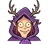
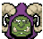
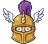
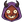

1 · The route on the table
The picked goal's route is a path that climbs from the hand to the portal: the rows are its phases, the columns the parties' lanes it crosses. Done in ink, ahead dotted, where it stands circled; the newest stretch draws itself in, as the reveal plays what landed. Where a leader sees two ways, the path forks and the person presses the way: the hand's card only points at it. Hover a node for its one line; press a way to pick it.

Design
Tech
ProductWaves · through the Orkmaster
Done Work Spec Talk Tech
TechWaves: which way?
Pick it on the table: through Design's screen, or Tech alone tonight.

2 · A leader's table: the same three marks
Every leader's table already is a graph (Tech's containers, Design's screens, Marketing's way people come). It takes the same three marks and no legend: the trail (ink where work went, dotted ahead), the circle (where the picked goal is now) and the fog (what nobody has drawn or measured yet: a screen known by its route only). Here Design's table, the screens along their flow.
The whole project · through Design
3 · Standing answers
The satchel at the table's edge opens Standing answers over the Orkmaster's table, as Open opens a thing (← goes back): what answers by itself, laid as goods. Each card is a question a leader asks and the answer it gets, with its rung of trust: Asks first, Tells after, By itself. The night climbs a rung when a check passed with no correction; the person can step one down any time (press the ladder). New goods come only from how the person answered this week. A card laid on the fire is forgotten, and its question asks again. Press a card, then the fire; or drag it there.
Standing answers
· through the OrkmasterWhat answers by itself, and how far you trust it.
Yours
Offered from this week
On every card in the hand
Answers spend at most about 5% of Claude's week a day; past it, they ask.
What goes away, what stays
Goes: the route written out. The route card's list of parties and the phase written on every card: the way is drawn, read at a glance, and what lies ahead (a question, a night, a costly step) is seen before it comes.
Goes: a choice between ways as words. The fork is pressed on the table; the hand's card only points at it, and leaves once the way is picked (Undo on the line under the hand).
Goes: rows of settings. The tier, the night, a retry, an icon's source: one stall, each rule a card, its trust a ladder the night climbs. The day's cap is the one number, said in the week's words.
Goes: a legend. The closed set of signs, each with its line on hover; the circle and the fog need no word.
Stays as decided. It is a table, never a map, in what a person reads; no dialog or drawer (the stall opens over the table, ← back); no count; colour a signal only; the pixel face for headings and buttons.
Open for the owner. The satchel as a fifth thing of the edge, or the stall behind the crowned head's …? Does the person climb a rung, or only the night? Do Talk and Spec stay rows, or does the path start at Work?
An experiment of 6 November 2026, not a goal and not a spec. Every colour, face and size is orkUI's token; the satchel, the fire, the hand-drawn circle and the ladder are drawn here first and would go into orkUI after a yes.